Seismic · 2021
Approval Workflow
Seismic's banks, insurers and asset managers wanted sellers to personalize content, but nothing personalized could reach a buyer without a compliance check. I led the design of distribution approval workflows: a seller submits an email or link, compliance reviews it step by step, and everyone can see who has it, what changed and what happens next. 73% of task ratings in testing came back easy or very easy.
Client
Seismic
Timeline
Aug 2020 – Jan 2022
Role
Lead Product Designer
Team
Product manager, workflow and front-end (Mantle) engineers, QA
Product area
Seismic Engagement · Admin · Compliance
Focus
Enterprise · Product UX · Design Systems
![Two views of the same LiveSend email. On the left, the seller's view after submitting: a banner reads The LiveSend email was submitted for approval, and an Approval Workflow panel shows the status In review, the workflow, submitter, current step and approver, with a Cancel button and a three-step tracker. On the right, the compliance reviewer's view of the same email, with Previous and Next controls (2 of 234), a Review flag on one piece of content, a Claim this step link, and Reject and Approve buttons](../assets/img/case/seismic-workflow-approval/cover.jpg)
In one line
Sellers could already send content to buyers as a tracked link, an email blast or a print order. For regulated firms, that was the problem: a personalized email reached a buyer before anyone in compliance saw it. I designed distribution approval workflows: rules an admin sets up, a submission flow for sellers, a review flow and dashboard for compliance, and one status panel that all three share.
Context and the problem
Seismic is a sales enablement platform. Content managers publish approved decks and documents, and sellers share them with buyers. Publishing already had an approval workflow. Distribution didn't. Once a seller picked the recipients, wrote the email and chose what to send, it went out.
For financial services customers that was a blocker. Every personalized email is a financial promotion, and a regulator expects a compliance team to have approved it. Two problems followed:
- Compliance had no way to govern an engagement before it was sent: the recipients, the email template, the content and the distribution method.
- Nobody could see where approvals stood. Compliance and sales teams needed one view of every engagement waiting for review, so they could act on it.
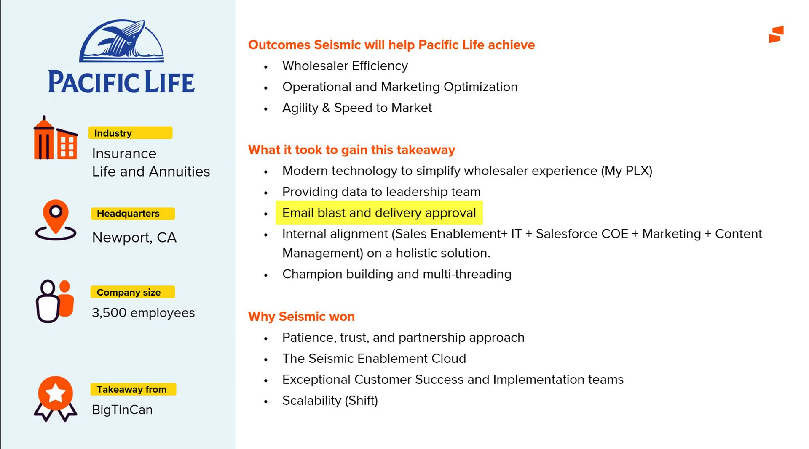

The constraints:
- Contract commitments. Approval workflows were already promised to existing customers, so scope and dates were partly set before design started.
- Two workflow systems. Publishing approval already existed, with its own states and admin settings. Distribution approval had to work next to it without confusing admins who used both.
- Profile rules. Publishing profiles could hide some distribution methods from some users, so the workflow couldn't assume every seller could send every way.
- A new design system mid-project. Seismic moved to the Mantle style guide during the work, so the high-fidelity screens were rebuilt on new components.
My role and what I owned
I was the lead product designer on approval workflows, from the first client interviews to visual QA in the dev environment.
- I owned the client and stakeholder interviews and their notes, the state and lifecycle models, the admin settings design, the page flow and dashboard navigation, the prototypes and the UserTesting study, the high-fidelity screens for sellers and reviewers, the responsive layouts, and the visual QA log with engineering.
- Product management owned requirements, the roadmap and the client commitments, and joined the design reviews with customers.
- Engineering built the workflow engine and triggers. The Mantle front-end team built the shared list view (datagrid) the dashboard sits on. QA wrote the integration test cases for each milestone.
The figures are working boards, prototypes, test slides and final screens. People, companies and content in the mockups are placeholder data. I've blurred colleagues' names on four boards, and left out internal meeting notes, customer emails and dev-environment screenshots because they name individuals.
Goals, and how we'd know
We agreed on what success meant before designing screens:
- Personalize and still comply. A seller can customize an email or link and submit it for approval without leaving the share flow. Tested with task completion and ease ratings.
- One place to act. A compliance reviewer can find everything waiting for them, open it and approve or reject it from a single dashboard.
- Status anyone can read. At any moment the seller and the reviewer can tell who has an engagement, which step it's on and what changed. Tested as states and flows clarity.
- Contracts met. For the business, success meant delivering the approval capability already promised to customers, in a form that Core customers could use too, not only Financial Services.
What we learned in research
Between August 2020 and January 2021 I ran design reviews and interviews with clients including Credit Suisse, IBM, FleetCor and 361 Capital, and with Seismic's customer specialists. I also ran a competitive review with business experts. IBM alone had 18,000 Seismic users and 1,400 content managers, so whatever we built had to hold up at that scale.

1. The workflows were built around content, not people
In the existing product, a workflow lived in a drawer on a document. To find what needed your review you drilled through folders, and nothing told you what was waiting for you. The settings and drawers didn't update as a workflow moved. So we designed around the reviewer, with a dashboard of engagements waiting for approval and a clean flow from notification to decision.
![Working board titled User Interface WIP. Annotated screenshots of the existing share dialog are marked the how, the who and the what, with a note that a step is needed to approve the distribution list: send for approval, approval granted, send to recipients. A second screenshot highlights the approval workflow widget inside a document, with a note that the publishing workflow guide should be reused for distribution but is buried too deep for user awareness. Below, Problems: workflows are very content centric and not user centric; settings and drawers are not dynamic; drilling down to find content in folders is time consuming. Solutions: create a more user centric design, clean the flow, dashboard](../assets/img/case/seismic-workflow-approval/problems-board.jpg)
2. Group review needs a claim
Credit Suisse and IBM both route reviews to a group, not a person. Two reviewers could open the same email at once, or nobody could, and assume someone else had it. They asked for approval claims and notification reminders. So claiming became part of the model: a reviewer claims a step, the others in the group are told, and admins can set reminders when nobody acts.
3. Mistakes are expensive to undo
In the IBM interview, the first pain point was that when a seller made a mistake with a distribution, it was hard to recover from. So rejection became a loop, not a dead end: a reviewer rejects with a comment and flags the content at fault, the seller fixes it in the same view and resubmits, and the history keeps both versions.
Strategy and the decisions that mattered
Decision 1: One state model for publishing and distribution
Admins would configure both workflows, and some reviewers would work in both. Two different sets of statuses would have meant two things to learn. I mapped the publishing and compliance workflows side by side and kept the states the same (Draft, In review, Approved, Rejected, Reissued, Scheduled, Expired) where they meant the same thing. They differ only at the end: publishing ends in Published, distribution ends in Sent.

Decision 2: Approve the engagement, not the document
The existing approval unit was a document. But compliance needed to approve the whole package a buyer would receive: who it goes to, what it says, what's attached and how it's sent. We made the engagement the thing that gets approved, and plugged the new workflow into the content lifecycle at the point where a seller generates a LiveDoc and chooses to send it.
We also only gated when we had to. If an admin turned distribution approval off for a team site, content published there could be shared without it. Needs approval? No goes straight to Send now.
![Two flow diagrams. Left, the Seismic content lifecycle: a content owner adds a file, it may need updates and approval, is published or scheduled, can expire, and a dotted box marks the new branch I want to send it via LiveSend, approval workflow. Right, the LiveDoc distribution permissions lifecycle: a document is published, a LiveDoc is generated, the seller shares it by shareable link, email with link or print order. A dotted red box labeled distribution approval workflow for LiveSend, Email Blast and Print Order shows the loop: needs approval, submit for approval, in review, reviewer reviews, approved or rejected with comments, then send now or schedule, ending in sent or canceled, with email notifications at each step](../assets/img/case/seismic-workflow-approval/lifecycle.jpg)
Decision 3: A separate approval dashboard for compliance
The obvious home for approvals was Engagement Center, where sellers already tracked what they'd sent. Part of the team wanted to put approvals there as another filter, since it was already built. I argued for a separate dashboard. Engagement Center is about activity: who opened what. Approval is management: what's waiting and who has to act. Mixing them would bury a compliance queue in engagement data.
We agreed on both. Compliance got an approval dashboard under Planner, and sellers kept Engagement Center with each engagement's approval status and current step on its card. Every path, from the dashboard, an email notification or a Seismic page, lands on the same engagement detail page. Reviewers arriving from the dashboard also get Previous and Next, so they can move through the queue without going back.

For navigation I compared top-level tabs against a secondary side nav under Planner. Tabs were quicker to build but put publishing and distribution approvals at the same level as everything else. The side nav gave Approvals a home that could hold more queues later, so we went with it.
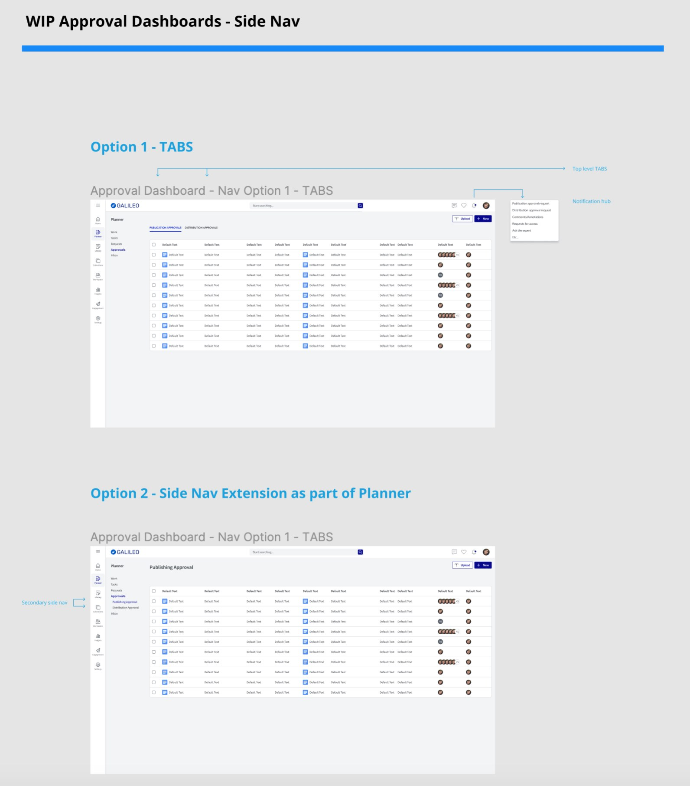
Decision 4: Claim softly
We modeled three ways a group reviewer could take ownership. Implicit claim: whoever acts first owns the step. Soft claim: a reviewer claims the step and the rest of the group is notified, but can still act. Second reviewer claim: someone else in the group takes over a claimed step. A hard lock was the risky option: if one reviewer went on leave, the step would sit claimed and nothing would move. We went with the soft claim, and admins can choose the claim level in settings.
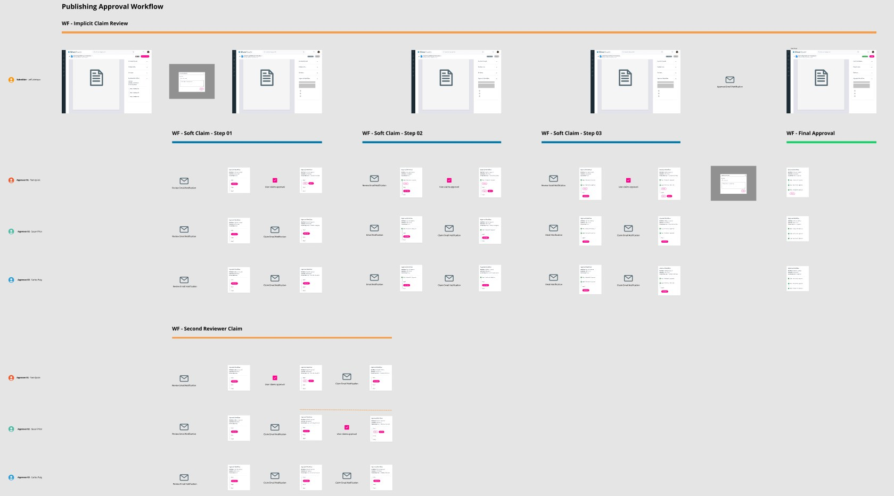
Design process and solution
Mapping every state
Before anything was high fidelity, I laid out every screen the seller and the reviewer would see in every state, connected by what triggers the move: in review, rejected and approved, including emails.
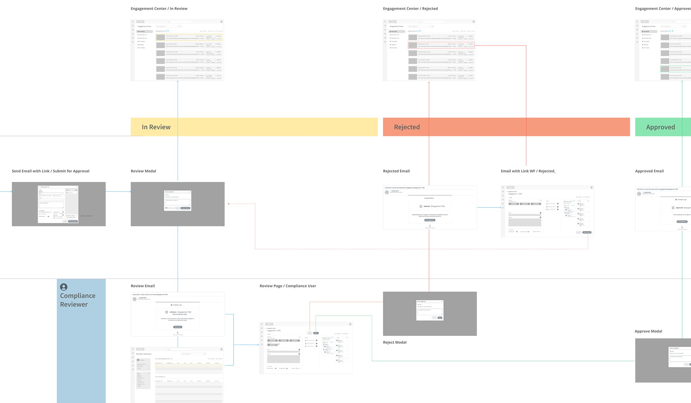
Admin: setting the rules
Admins build a workflow in Approval Process Settings: the steps, the approvers for each step and who's the default, the notifications, and reminders if a step sits too long. I also ran UI QA on the existing admin styles, which gave us a short list of fixes to ship with it.
![Board titled WF Admin Reminders Updated plus UI QA. Left, two versions of Approval Process Settings with a three-step workflow tracker, step information, approvers and notifications, annotated with changes: no toggle for reminders, move plus Add under the controls, allow delete, change Publish to Save Settings, a 300 pixel middle panel, trash cans replaced with X. Right, UI QA of the current styles with notes to normalize font size to 12 pixels, add 10 pixel padding, disable internal scrollable panels and make the whole page scroll](../assets/img/case/seismic-workflow-approval/admin-settings.jpg)
Seller: submit from where you share
Sellers don't go somewhere else to ask for approval. When content that needs approval goes into a LiveSend email, a banner says the workflow was triggered and by which file. Send becomes Submit for approval, and the seller picks the approver for the first step and can leave a message.
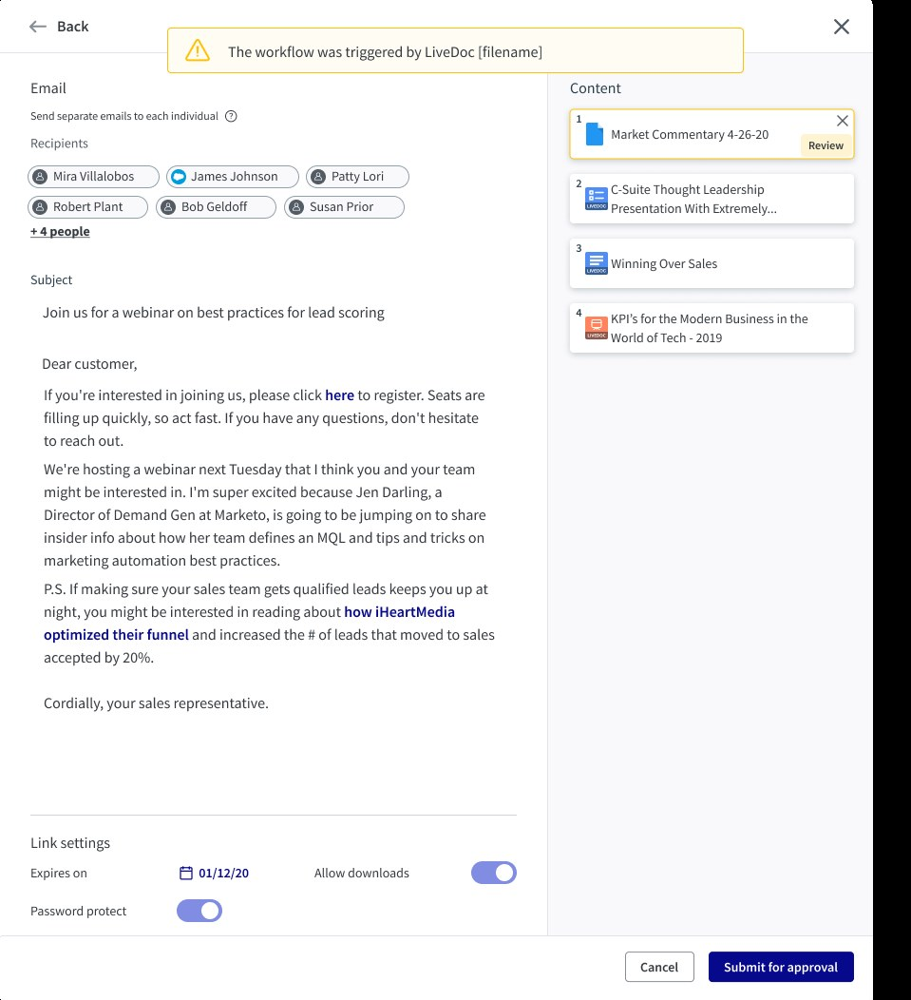
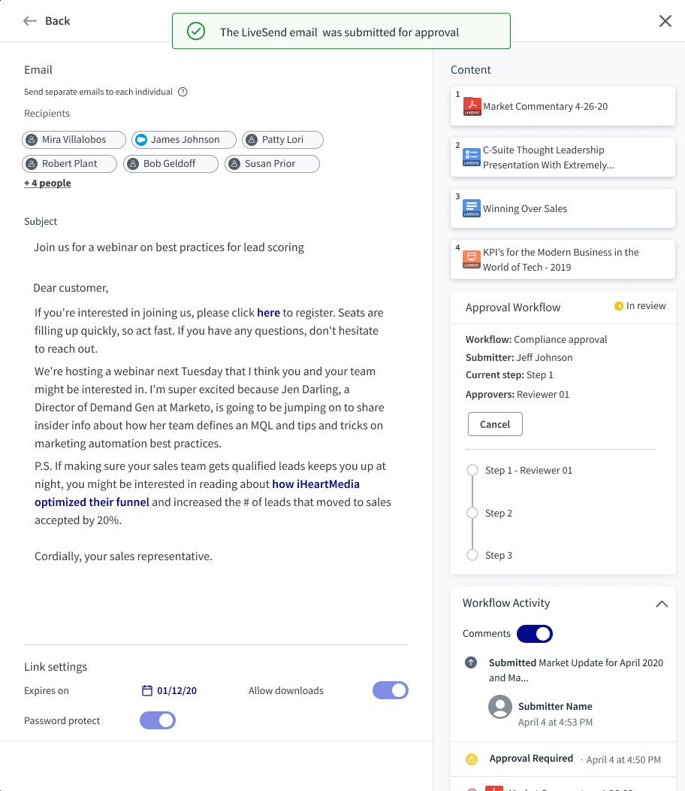
Reviewer: claim, then decide
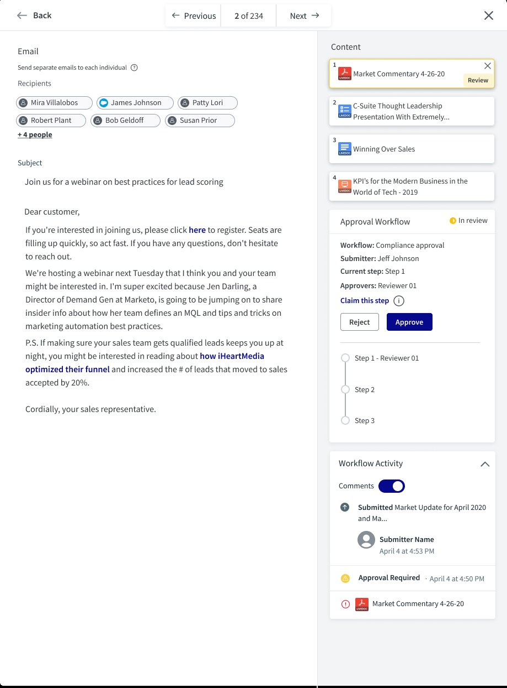
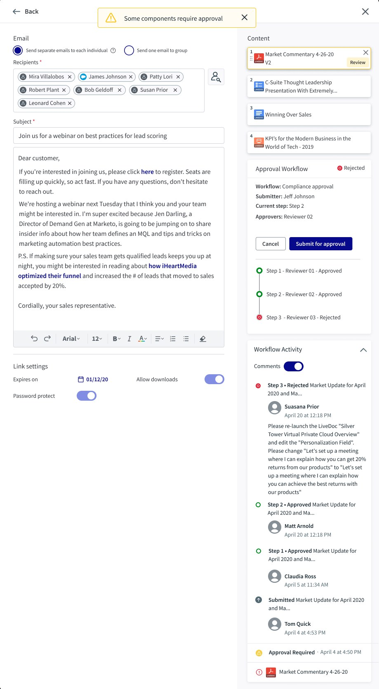
Dashboards

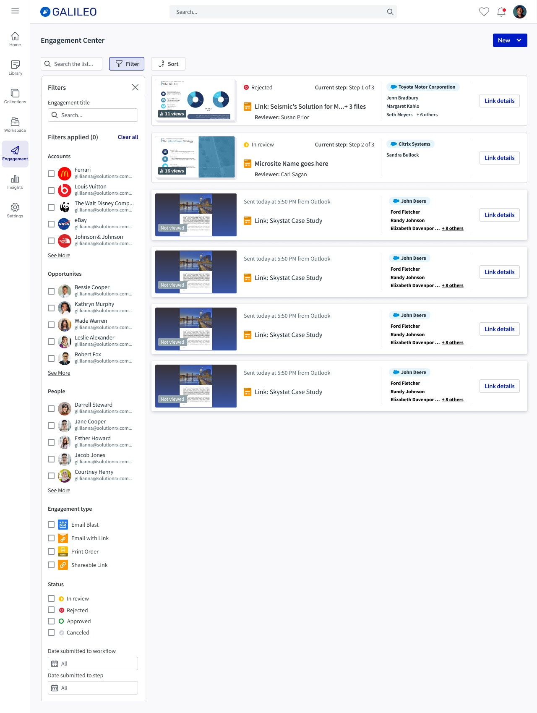
Responsive
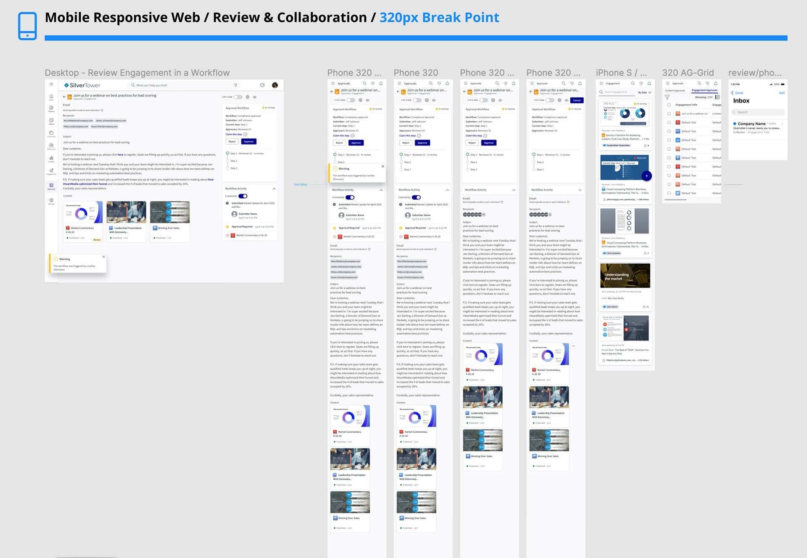
Validation and iteration
I built click-through prototypes of the seller's flows (submit, then reject and resubmit) and tested them on UserTesting with 10 unmoderated participants: directors, managers and VPs in sales and business development, across four countries. The test goals were the clarity of states and flows, the activity widget, the review modals and the notification emails.
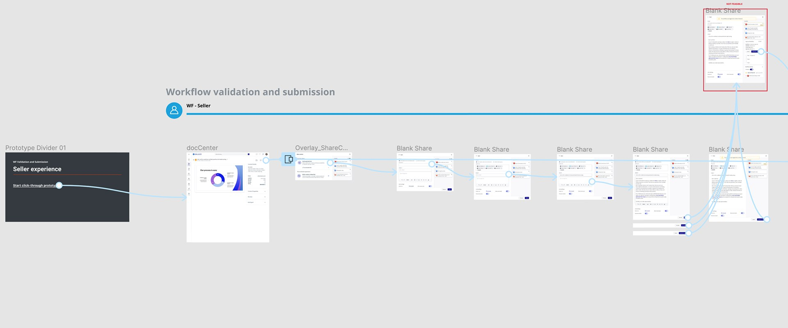
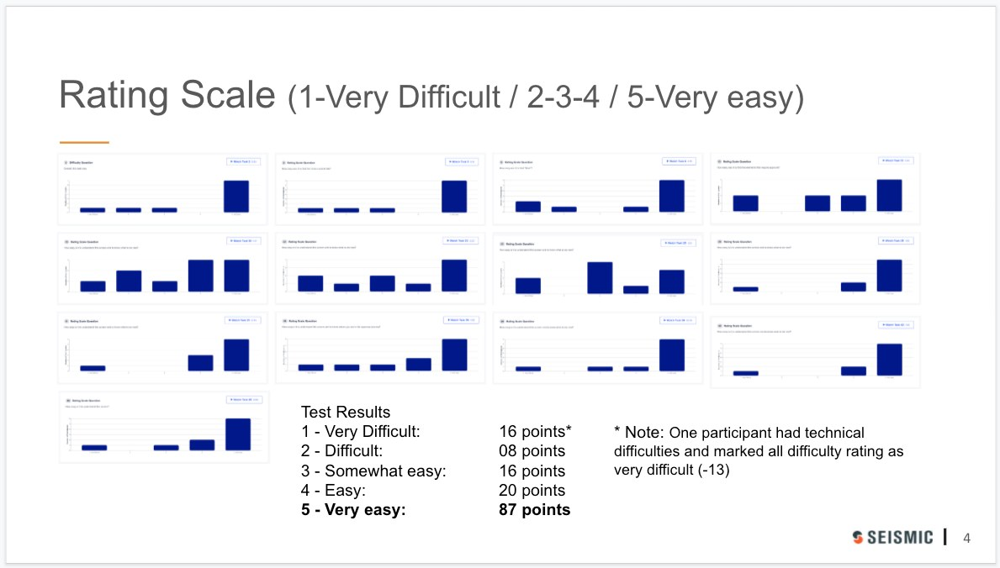
We thought a rejected engagement should stay rejected. People read that as stuck.
We thought the status should record the last decision, so an engagement stayed Rejected until a reviewer approved it. We learned that participants who resubmitted then saw Rejected again and assumed the resubmission hadn't worked. So we did two things: the status now changes from Rejected back to In review as soon as the engagement is resubmitted, and the activity feed records a Changed entry naming the updated document, so a reviewer can see what's different before deciding.
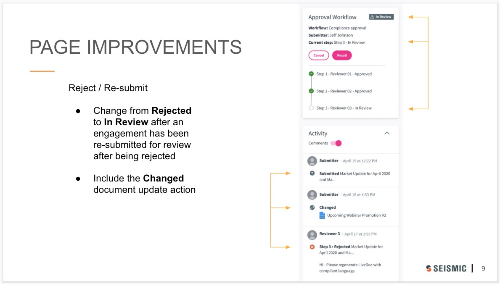
Outcome and impact
Approval workflows shipped in milestones between October 2021 and January 2022: LiveSend workflow triggers and cancel first, then email blast with approver selection, the compliance dashboard list view and the resubmit and revalidation flow. I ran visual QA against the dev environment for each one, in a shared log with engineering.
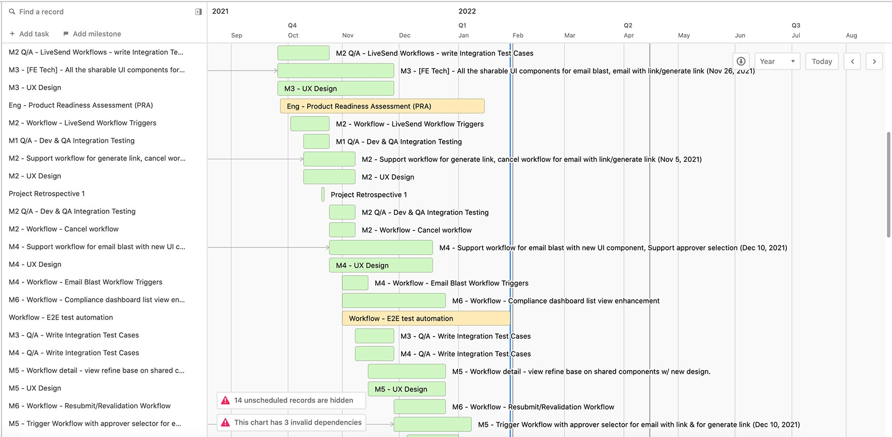
Where approvals paid off
Financial services accountsSources: internal account and win announcements. Approval workflows were one part of each deal, not the whole reason for it.
For the business, approval workflows met contract commitments to existing customers and gave Seismic an edge in winning regulated firms and upselling to the ones it had. HSBC Asset Management is a good example: it expanded Seismic to its Central Approvals Team to run financial promotions approval the same way worldwide.
For the product, the approval panel and activity feed became shared components. Publishing and distribution now show status the same way, so a reviewer who knows one knows the other.
What I'd do differently
- Test the reviewer as hard as the seller. Our UserTesting study was built around the seller's flows because they were easiest to recruit for. Compliance reviewers are a narrow audience, but they spend all day in the dashboard. A few moderated sessions with real reviewers would have tested the queue, the claiming and the Previous and Next controls under real volume.
- Agree on success metrics that outlast the project. My notebook from the start has Post release: analytics, goals met? OKRs, success metrics on it. We had strong test results and business evidence, but not time-to-approval or rejection-rate tracking from launch. Those two numbers would have shown whether the workflow sped compliance up or just made it visible.
- Settle the design system first. Moving to Mantle mid-project meant rebuilding high-fidelity screens. Next time I'd push to lock the component foundation before high-fidelity work starts, or design directly in the new system from the first high-fidelity pass.
The broader lesson: in a compliance product, the approval itself is the easy part. The hard part is making sure nobody has to ask where something is. Every decision here, from one state vocabulary to soft claims and the shared status panel, came down to that.